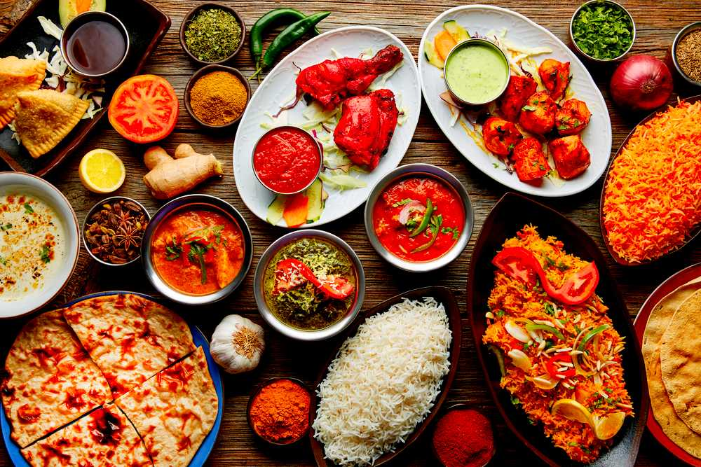

Popular Indian Recipes for TOP Community !

In the world of cuisines,Indian dishes are some of the most finger licking
specimens out there. Ranked among the best in the world, these super spicy
dishes with their exotic names will quickly gain their spot in your list of
favorites, and rightfully so!
A pleasant consequence of the diversity of India is the wide varieties of food
available here.Every state and region has its own collection of mouthwatering items.
Having lived in this country for 21 years, I have had the luxury of trying out
some of the best delicacies it has to offer.I'll be sharing my personal
favorites in this article !
Here are three must try Indian Recipes :
- Shrimp Curry
- Butter Chicken
- Hyderabadi Biryani